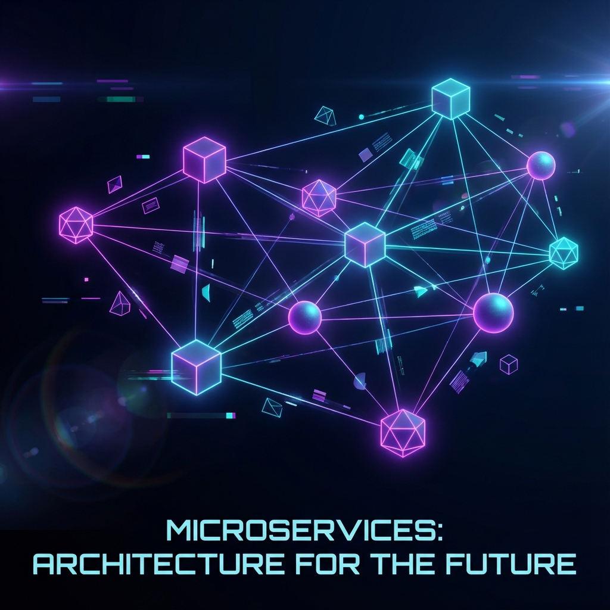
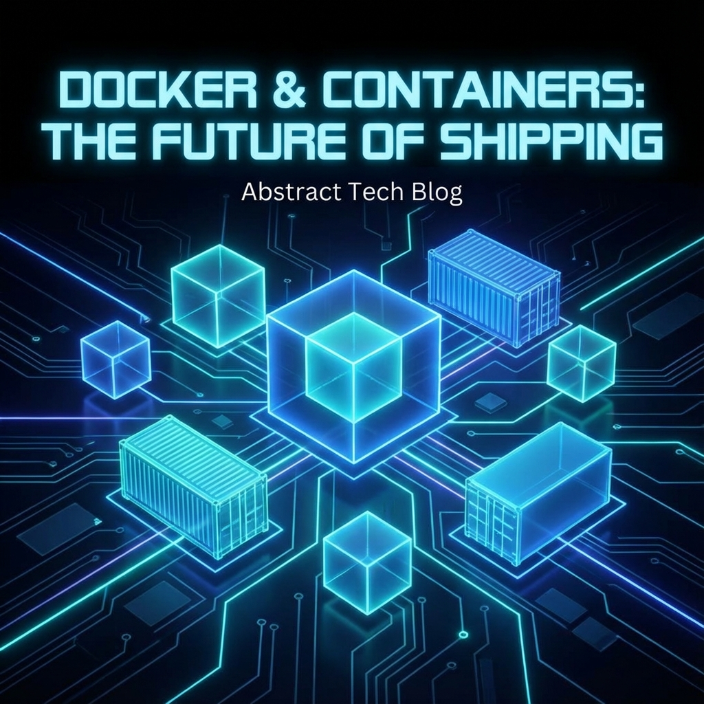
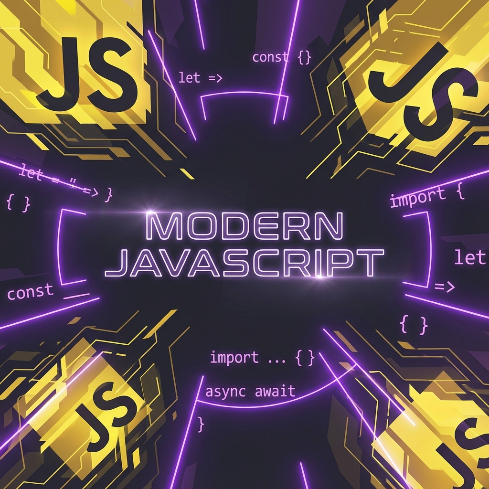

Microservices Best Practices
Essential best practices every developer should follow when designing and building scalable microservices architectures.
Hello, I'm
who Loves machines more than humans. Born to code, forced to socialize! 😎.
Driven by curiosity and fueled by code, I specialize in crafting clean, efficient, and scalable backend systems. With over 5 years of industry experience and a solid foundation in Software Engineering, along with hands-on expertise in cloud computing, DevOps pipelines, and AI, I build solutions that drive real-world impact. Whether it's a web app, mobile app, desktop app, API, or AI integration — I turn ideas into reality.
Currently pursuing a Master of Science in Computer Science, with a focus on advanced topics such as Advance Algorithms, Advance Software Architecture, Data Science, Machine Learning, Generative AI, Cloud Computing, Cyber Security etc.
Awarded First Class Honours. Studied at the Sri Lanka
Institute of Information Technology (SLIIT), affiliated with the University
of Bedfordshire (UK).
Final year project: Developed an
AI-powered chatbot to help GCE O/L students learn history through interactive conversations using Natural Language Processing (NLP).
2023 - Present
2022 - 2023
2021 - 2022

Essential best practices every developer should follow when designing and building scalable microservices architectures.

A comprehensive guide to container-based development, explaining why Docker is crucial for modern software engineering.

Exploring the latest features in the JavaScript ecosystem that improve developer productivity and code readability.
Robust, scalable server-side solutions and RESTful APIs optimized for performance and security.
Modern, responsive web apps with intuitive UI/UX design and seamless interactivity.
Cross-platform mobile experiences that bring your ideas to life on both iOS and Android.
05. What's Next?
I'm currently looking for new opportunities, my inbox is always open. Whether you have a question or just want to say hi, I'll try my best to get back to you!
Say Hello